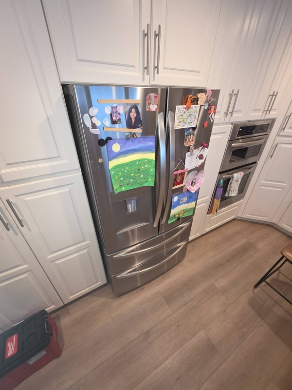

LG Refrigerator Repair: How Long Should a Refrigerator Last?
One of the most common questions homeowners ask is how long a refrigerator should last before major repairs or replacement become necessary. Because a refrigerator operates twenty four hours a day, seven days a week, it experiences more continuous use than almost any other appliance in the home. While modern refrigerators are designed for long term reliability, their lifespan depends on several factors, including maintenance, usage habits, environmental conditions, and the quality of repairs performed throughout their service life.
Modern LG refrigerators are built with advanced cooling systems, inverter compressor technology, electronic controls, temperature sensors, and smart appliance features that help improve performance and energy efficiency. When properly maintained, many refrigerators can provide reliable service for well over a decade. However, even the most advanced appliance will eventually experience wear on critical components that require professional attention.
One of the biggest factors affecting refrigerator lifespan is preventive maintenance. Refrigerators that receive regular cleaning, proper airflow, timely repairs, and routine inspections often remain reliable significantly longer than appliances that are neglected. Professional LG refrigerator repair technicians frequently encounter refrigerators with relatively minor issues that could have been prevented through basic maintenance and early diagnostics.

Condenser coil maintenance plays an important role in long term appliance health. Dirty coils force the cooling system to work harder than necessary, increasing stress on the compressor and other components. Over time, this additional workload may reduce overall efficiency and contribute to premature wear. Keeping condenser coils clean helps support proper heat transfer and improves cooling system performance.
Condenser coil maintenance plays an important role in long term appliance health. Dirty coils force the cooling system to work harder than necessary, increasing stress on the compressor and other components. Over time, this additional workload may reduce overall efficiency and contribute to premature wear. Keeping condenser coils clean helps support proper heat transfer and improves cooling system performance.
Condenser coil maintenance plays an important role in long term appliance health. Dirty coils force the cooling system to work harder than necessary, increasing stress on the compressor and other components. Over time, this additional workload may reduce overall efficiency and contribute to premature wear. Keeping condenser coils clean helps support proper heat transfer and improves cooling system performance.
Condenser coil maintenance plays an important role in long term appliance health. Dirty coils force the cooling system to work harder than necessary, increasing stress on the compressor and other components. Over time, this additional workload may reduce overall efficiency and contribute to premature wear. Keeping condenser coils clean helps support proper heat transfer and improves cooling system performance.
Temperature stability is another important factor. Refrigerators that consistently maintain proper temperatures generally experience less strain than appliances operating with hidden cooling problems. If homeowners notice fluctuating temperatures, excessive frost buildup, unusual noises, or longer running cycles, addressing the issue quickly can help prevent additional wear on internal components. Professional LG refrigerator repair often helps extend appliance life by correcting problems before they become more severe.
Temperature stability is another important factor. Refrigerators that consistently maintain proper temperatures generally experience less strain than appliances operating with hidden cooling problems. If homeowners notice fluctuating temperatures, excessive frost buildup, unusual noises, or longer running cycles, addressing the issue quickly can help prevent additional wear on internal components. Professional LG refrigerator repair often helps extend appliance life by correcting problems before they become more severe.
Temperature stability is another important factor. Refrigerators that consistently maintain proper temperatures generally experience less strain than appliances operating with hidden cooling problems. If homeowners notice fluctuating temperatures, excessive frost buildup, unusual noises, or longer running cycles, addressing the issue quickly can help prevent additional wear on internal components. Professional LG refrigerator repair often helps extend appliance life by correcting problems before they become more severe.
Door gaskets also influence refrigerator longevity. Damaged seals allow warm air to enter the appliance continuously, forcing cooling systems to work harder to maintain temperatures. This constant workload can increase energy consumption and accelerate wear on important refrigerator components. Regular inspection of door seals helps support efficient operation and long term reliability.